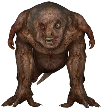

Mutants
Снорк
- Опис: Людина-мутант, яка частково зберегла свою форму, але втратила розум. Обличчя
вкриває
старий протигаз, а тіло — залишки військового одягу.
- Загальні свідчення: Часто зустрічається в підземеллях і покинутих спорудах. Відомий
своєю
швидкістю та стрибучістю.
- Образ життя і поведінка: Снорки живуть у зграях, ведуть полювання переважно в темряві.
Нападають стрімко, пересуваються на чотирьох кінцівках. Полюбляють ховатися в тіні перед
атакою.
Кровосос
- Опис: Високий гуманоїд із щупальцями замість рота, здатний ставати невидимим. Виглядає
дуже
страхітливо через потворне тіло.
- Загальні свідчення: Найчастіше з'являється в болотах, міських руїнах або поблизу
великих
аномалій.
- Образ життя і поведінка: Кровосос полює самотужки, переслідує жертву до виснаження.
Атакує
стрімко та безшумно, часто зненацька. Харчується кров’ю своїх жертв.
Контролер

- Опис: Гуманоїд із великими мозковими виступами на голові, потужний пси-мутант.
- Загальні свідчення: Часто зустрічається біля місць із високою концентрацією радіації чи
аномалій.
- Образ життя і поведінка: Використовує свої психічні здібності для контролю свідомості
інших. Відомий здатністю створювати ілюзії, які збивають жертву з пантелику. Уникає
фізичного контакту, вважаючи за краще атакувати з відстані.
Псевдогигант

- Опис: Масивний мутант із непропорційно великим торсом і ногами, схожими на колоди.
- Загальні свідчення: Його важкі кроки чути здалеку. Полюбляє залишатися в відкритих
місцях
або підземних комплексах.
- Образ життя і поведінка: Живе самотньо через свою силу та розміри. У разі небезпеки
створює
ударні хвилі, які можуть відкинути ворогів. Дуже агресивний, якщо потривожити.
Химера

- Опис: Двоголовий мутант із м’язистим тілом та величезними кігтями.
- Загальні свідчення: Зустрічається здебільшого вночі на відкритих територіях.
- Образ життя і поведінка: Полює на великих тварин і людей. Відома своїми смертельними
стрибками. Надзвичайно обережна, нападає лише за сприятливих умов.